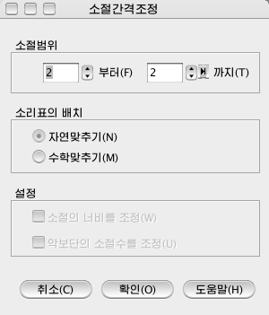

소절차림표\소절간격조정...
이 지령을
리용하여 소리표사이 간격, 소절폭 등을 조정합니다.
<소절\소절간격조정...>차림표를
선택하면<소절간격조정>대화창이 표시됩니다.

- 소절범위 : 간격조정하려는 소절의 범위를 설정합니다.
- 소리표의 배치
- 자연맞추기 : 소절안에서 소리표들사이 간격을 보기좋게 맞추기합니다.
- 수학맞추기 : 소절안에서 소리표들사이 간격을 기정값으로 맞추기합니다.
- 설정 : 악보단의 소절수이상으로 소절범위를 설정하는
경우에만 동작가능합니다.
- 소절의 너비를 조정 : 이 항목을 체크하면 악보단내에서 소절에 있는
소리표의 빈도수에 따라 소절너비를 조절합니다.
- 악보단의 소절수를 조정 : 이 항목을 체크하면 악보단내에서 소절수를 조절합니다.